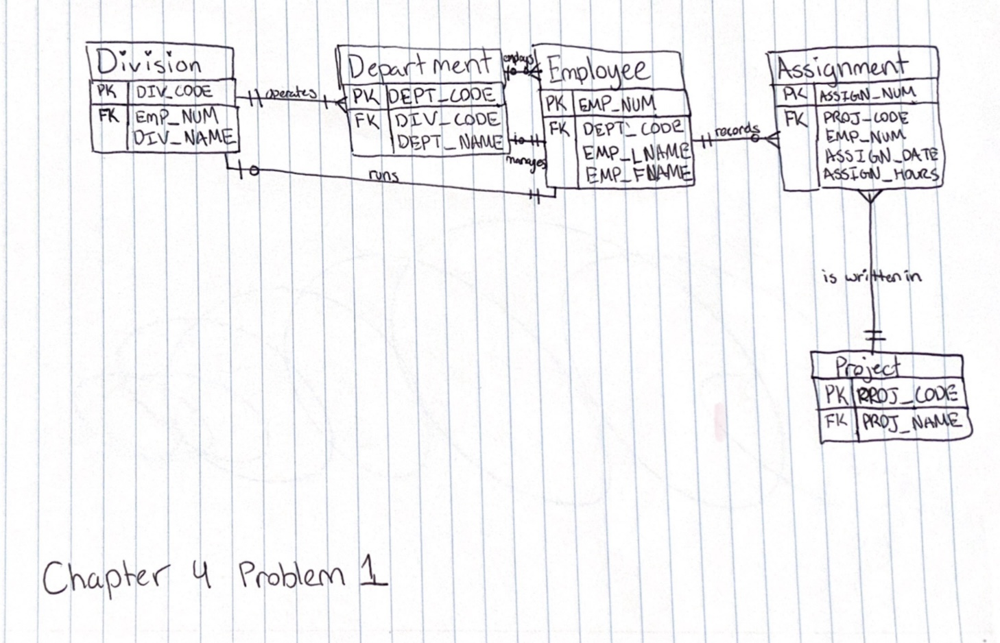
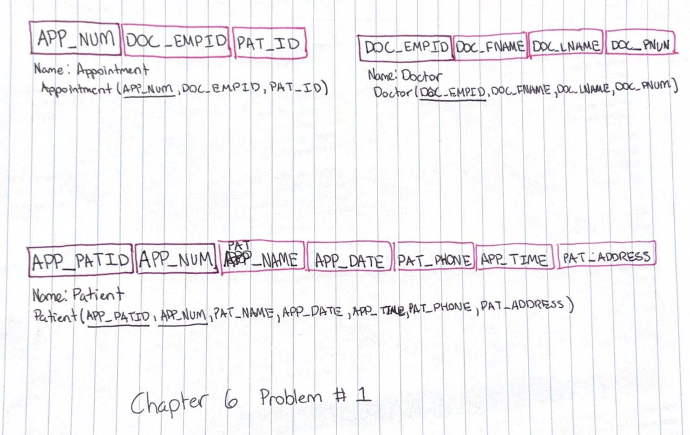

I currently go to school at Oakland Community College.
I want to get a degree in Software Engineering.
I do plan on transfering somewhere.
I am currently enrolled in 3 courses in my winter semester.
Name: Chapter 4 Problem 1
Course: CIS:1200
Grade: 100%

Requirements:
Use the following business rules to create a Crow’s Foot ERD. Write all appropriate connectivities and cardinalities in the ERD.
Name: Chapter 6 Problem 1
Course: CIS:1200
Grade: 100%

Requirements:
Using the descriptions of the attributes given in the figure, convert the ERD shown in Figure P6.1 into a dependency diagram that is in at least 3NF.
Name: Protest Song Analysis
Course: ENG:1510
Grade: 100%
PDF Link
Teacher Feedback:
Hello Kendall,
You did a really great job here! Your paper is well organized and you used so many lyrics to prove your point, perfectly!
There is so much pathos in this song that you accurately point out. Keep up the good work!
Name: Reflection Journals
Course: ENG:1510
Grade: 100%
PDF Link
Teacher Feedback:
Hello Kendall,
you did such a good job here! Your use of "in other words" was perfect! Really great utilization of the phrase. Overall, awesome job, no notes!
Name: Research Questions
Course: ENG:1510
Grade: 100%
PDF Link
Teacher Feedback:
I think both of these topics are great! Pick whichever one you like the most.
 CIS 1200 Description
HTML5 Programming: CIS 1420
CIS 1200 Description
HTML5 Programming: CIS 1420
 CIS 1420 Description
Composition 1: ENG 1510
CIS 1420 Description
Composition 1: ENG 1510
 ENG 1510 Description
ENG 1510 Description